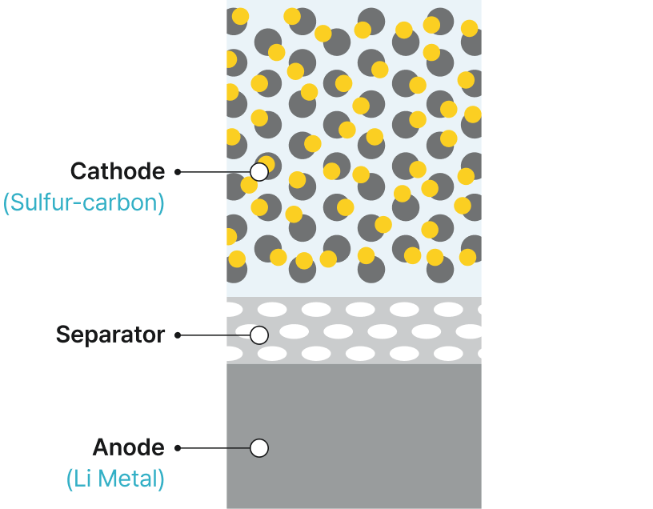

LG Energy Solution rozwija komercjalizację technologii akumulatorów litowo-siarkowych, które zapewniają wysoką gęstość energii w przeliczeniu na jednostkę masy, dzięki czemu są lekkie, a jednocześnie zdolne do generowania dużej mocy chwilowej. Technologia ta napędzi innowacje w przyszłych środkach transportu, takich jak samoloty i miejska mobilność powietrzna (UAM).
Badania i Rozwój
Bateria przyszłości
LG Energy Solution is accelerating the development of an innovative next-generation battery portfolio powered by cutting-edge technologies. By developing safer, more efficient, high-performance, and cost-effective next-generation batteries, we aim to bring the future mobility era closer.
Akumulator litowo-siarkowy
Akumulatory litowo-siarkowe wykorzystują lekkie materiały, takie jak kompozyty siarkowo-węglowe w katodzie i metaliczny lit w anodzie, osiągając ponad dwukrotnie większą gęstość energii niż konwencjonalne akumulatory litowo-jonowe.

Kluczowe cechy technologii akumulatorów litowo-siarkowych
(Komercjalizacja 2029)

Zwiększona gęstość energii w przeliczeniu na jednostkę masy
Ponad dwukrotnie większa gęstość energii właściwej niż w akumulatorach litowo-jonowych, co pozwala na znacznie większą pojemność przy tej samej masie.

Wyjątkowa lekkość
Zastosowanie lekkich materiałów, takich jak siarka i węgiel, zamiast tlenków metali w katodzie.

Wysoka konkurencyjność kosztowa
Wykorzystanie obfitej i taniej siarki w celu obniżenia kosztów produkcji akumulatorów.
Pionierskie wejście na nowe rynki dzięki lekkości i konkurencyjności kosztowej
Dzięki wyjątkowej lekkości i konkurencyjności kosztowej akumulatory litowo-siarkowe znajdą pierwsze zastosowanie w wysokościowych bezzałogowych statkach powietrznych (UAV) oraz UAM, a następnie rozszerzą się na szerszy rynek mobilności lotniczej, wspierając elektryfikację przyszłego transportu.

HALE UAV
(BSP wysokiego pułapu)

UAM
Udany test lotu wysokościowego UAV zasilanego akumulatorem litowo-siarkowym (2020)
W 2020 roku LG Energy Solution (wówczas LG Chem) z powodzeniem zademonstrowało potencjał technologii litowo-siarkowej, zasilając wysokościowy, długodystansowy solarny UAV opracowany przez Korea Aerospace Research Institute. Lot testowy trwał 13 godzin, z czego 7 godzin na wysokości 12–22 km w stratosferze.